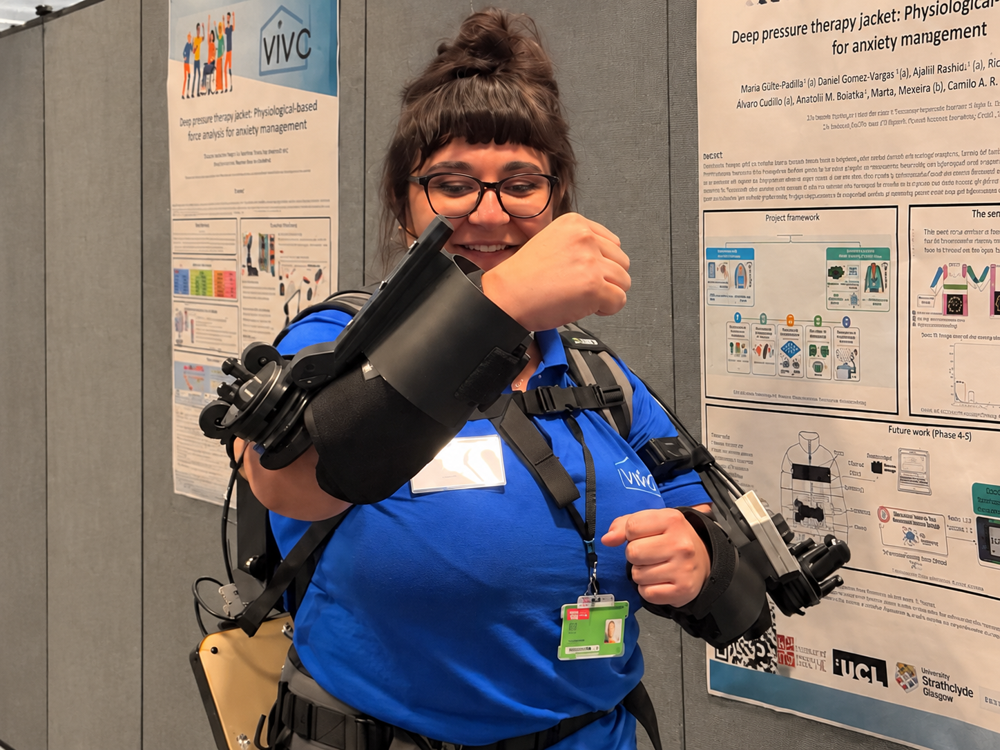
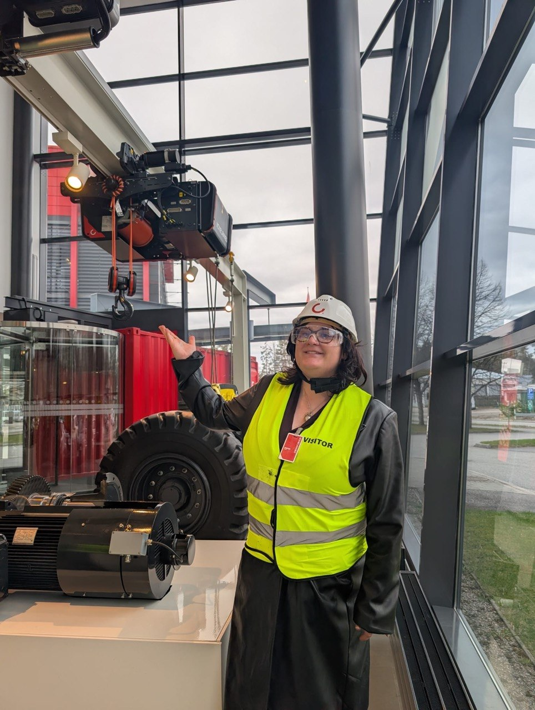
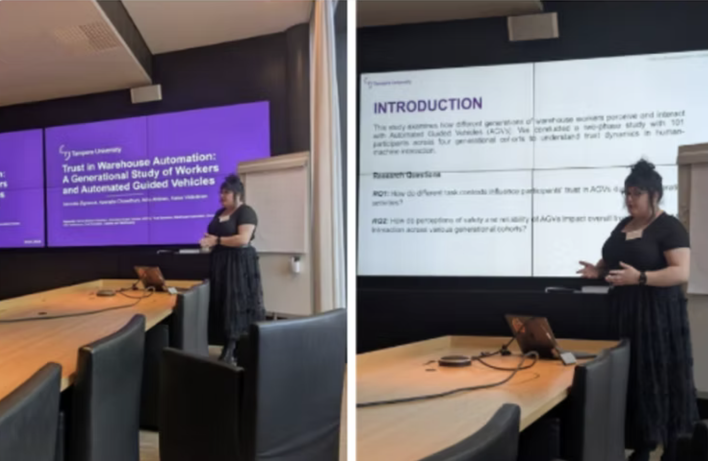

Through my work at Tampere University, I have had opportunities to collaborate with international research teams, engage with industrial partners and introduce robotics and human–technology interaction to students, professionals and the wider public.
International Research Collaboration
Bristol Robotics Laboratory - Visiting Researcher
University of the West of England, Bristol, UK | April- May 2026

I spent two months as a visiting researcher at Bristol Robotics Laboratory (BRL), working on an experimental study exploring human–robot collaboration involving a mobile robot and an upper-body exoskeleton.
The research examined how wearing an exoskeleton affected people's experience of working with a mobile robot, including perceived workload, trust, usability and task performance.
During the visit, I was involved in preparing and conducting the experimental study, recruiting and working with participants, collecting quantitative and qualitative data, and collaborating with researchers from different technical backgrounds.
The experience also gave me an opportunity to work in a different research environment, exchange ideas with other researchers and gain hands-on experience with wearable robotics and experimental human–robot interaction.
Industry Collaboration & Research Visits
Mixed Fleet - Business Finland Research Project
Tampere University | 2024–2026

My doctoral research has been conducted as part of the Business Finland-funded Mixed Fleet project, which investigates human-automation collaboration in logistics environments.
The project brings together researchers and industrial partners, including Mitsubishi Logisnext Europe, Konecranes, Navitec and VTT, to explore how people and different types of automated vehicles can work safely and effectively in shared environments.
My involvement has included:
- Participating in industry meetings, workshops and research visits to understand practical challenges in logistics automation.
- Working with industrial stakeholders to identify issues related to trust, communication, safety and human–automation coordination.
- Contributing to research activities involving automated guided vehicles (AGVs), autonomous mobile robots (AMRs) and warehouse simulation.
- Translating insights from industry discussions into research questions, study scenarios and experimental activities.
- Presenting and discussing research findings with academic and industrial collaborators.
Working with industrial partners has been particularly valuable because it exposes the difference between how technology is expected to work and how people actually experience it in practice.
Robotics Demonstrations & Public Engagement
Robostudio - Tampere University
Tampere University | 2024–2026

Alongside my research, I have participated in activities at Tampere University's Robostudio, where different robotic platforms are used for research, demonstrations and educational activities.
These activities have involved introducing robotics to visitors from schools, companies and other organisations, explaining how the technologies work and discussing their potential applications.
My involvement has included:
- Demonstrating robotic platforms and their interactive capabilities to different audiences.
- Introducing visitors to social robotics, mobile robots and human–robot interaction.
- Explaining research concepts in accessible language to people without a technical background.
- Supporting visits, demonstrations and discussions with students, researchers, industry representatives and members of the public.
- Encouraging visitors to interact with robotic systems and ask questions about their capabilities and limitations.
I particularly enjoy these activities because people often approach robots with very different expectations. Some are excited, others are sceptical, and many are simply curious.
Demonstrations provide an opportunity to discuss what robots can actually do, where they struggle and why understanding the human side of technology matters.
Research Communication & Academic Engagement
Conferences, Presentations & Scientific Community

Communicating research is another part of my academic work. I have presented findings at scientific conferences, participated in discussions with researchers from different disciplines and contributed to academic peer review.
My activities include:
- Presenting research on trust, uncertainty and human–automation interaction at academic conferences.
- Preparing scientific presentations, research posters and materials for academic and non-academic audiences.
- Serving as a session chair at CHIRA 2026.
- Reviewing scientific submissions for conferences and journals, including HHAI, IEEE RO-MAN and ACM Transactions on Human-Robot Interaction.
- Discussing research findings and methodological approaches with international collaborators.
These experiences have helped me become more confident in communicating complex research, responding to questions and engaging with perspectives outside my immediate research area.
Beyond the Laboratory
Research takes me into industrial warehouses, robotics laboratories, classrooms and public demonstrations. I enjoy meeting people who approach technology from different perspectives, whether they are developing the systems, working alongside them or encountering a robot for the first time.
These conversations often raise questions that would be easy to overlook in academic literature or experimental data. They keep my research connected to how technology fits into people’s lives and work.